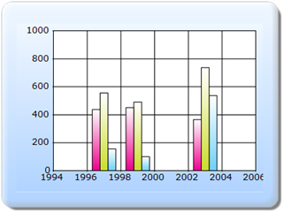

The steps to apply skins for the Chart series through ChartModel are as follows:
Step 1:
View:
Add the code displayed below in the Index.aspx file.
View[ASPX]
<%--Rendering the Chart COntrol--%>
<%= Html.Chart("ChartModel",(MVCChartModel)ViewData["ChartModel"]) %>
View[cshtml]
@*--Rendering the Chart COntrol--*@
@(new HtmlString(Html.Chart("SimpleChart",(MVCChartModel)ViewData.Model).ToString()))
Step 2:
Controller:
Add the code displayed below in the HomeController.cs file. The Chart Series Skins can be set by using the ChartSeriesSkins property.
public ActionResult Index()
{
MVCChartModel chartModel = new MVCChartModel();
//Applying Skins for the chart series
chartModel.ChartSeriesSkins = ChartSeriesSkins.Colorful;
ChartSeries series1, series2, series3;
series1 = new ChartSeries("Saab", ChartSeriesType.Column);
series1.Points.Add(1997, 437);
series1.Points.Add(1999, 451);
series1.Points.Add(2003, 366);
series2 = new ChartSeries("Volvo", ChartSeriesType.Column);
series2.Points.Add(1997, 556);
series2.Points.Add(1999, 491);
series2.Points.Add(2003, 737);
series3 = new ChartSeries("Volvo1", ChartSeriesType.Column);
series3.Points.Add(1997, 156);
series3.Points.Add(1999, 100);
series3.Points.Add(2003, 537);
chartModel.Series.Add(series1);
chartModel.Series.Add(series2);
chartModel.Series.Add(series3);
chartModel.Skins = ChartModelSkins.Office2007Blue;
chartModel.BorderAppearance.SkinStyle = ChartBorderSkinStyle.Emboss;
ViewData["ChartModel"] = chartModel;
return View();
}
Step 3:
Run the code, to get the following output.

Figure 311: ChartSeries Skin-Colorful